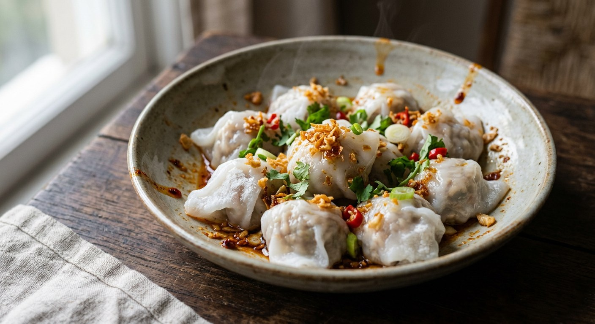

A batter-thin rice skin steamed on a cloth stretched over the pot, folded in one move around a sweet-savoury pork, radish and peanut filling — the other half of every market dumpling stall in Thailand.

ข้าวเกรียบปากหม้อ takes its name from where it is cooked: ปากหม้อ is the mouth of the pot, and the dish is made by stretching a white cloth tight across that mouth and steaming wafer-thin rounds of rice batter on it — ข้าวเกรียบ is the "rice crisp" the translucent skin is named after, even though the finished skin is soft, not crisp. The vendor's rhythm never changes: ladle, spread, cover, and the moment the skin turns glass-clear, a ball of filling goes in the middle and the skin is folded up and over with one scrape of the spatula.
It is the permanent stall-mate of sakoo sai moo, and the two usually share a filling. Kapook's recipe runs the same sweet-savoury pork — palm sugar, ground peanuts, radish — through both dishes, and notes that this is why the pair is always sold together: one filling, two wrappers, one stall. TrueID pitches the dish the other way round, as a money-maker — the same page teaches sakoo sai moo first, then this, as the two halves of a proper snack business.
The skin is the skill. Wongnai's vendor advice is all about the cloth: use white muslin, stretch it as tight as it will go, because the batter will not spread on a slack cloth — and sieve the batter twice so no lumps of raw flour spot the skins. The filling, every source agrees, must be cold before it touches the skin, or the steam from a warm filling turns the wrapper to glue in your hands.
| Thai | English | Amount |
|---|---|---|
| แป้งข้าวเจ้า | Rice flour | 2 cups |
| แป้งมันสำปะหลัง | Tapioca flour | 1 cup |
| แป้งเท้ายายม่อม | Arrowroot flour | 1/2 cup |
| น้ำเปล่า | Water | 4 cups |
| หมูสับ | Minced pork | 150 g |
| ไชโป๊หวาน | Sweet pickled radish, finely chopped | 150 g |
| ถั่วลิสงคั่ว | Roasted peanuts | 100 g |
| หอมแดง | Shallots | 80 g |
| กระเทียม | Garlic | 30 g |
| รากผักชี | Coriander root | 15 g |
| พริกไทยเม็ด | White peppercorns | 1/2 tbsp |
| น้ำตาลปี๊บ | Palm sugar | 2 1/2 tbsp |
| ซีอิ๊วขาว | Light soy sauce | 1/2 tbsp |
| น้ำมันพืช | Vegetable oil | 2–3 tbsp |
| กระเทียมเจียว, ผักสด | Fried garlic and garlic oil, lettuce, fresh chillies, coriander | to serve |
The market-scale batch (TrueID): 250 g minced pork, 200 g roasted peanuts, 200 g sweet radish, palm sugar, light soy and a half teaspoon of salt — plus 300 g coconut cream thickened with rice flour, poured over the top. The classic thin skin (Kapook / Wongnai): 1 cup rice flour with just 2 tablespoons tapioca flour and 1 tablespoon arrowroot to 3 cups water — the old thin, translucent style. The coloured skins (Wongnai): swap part of the water for pandan water for green skins and butterfly pea water for blue, the way market stalls lay out white, green and blue dumplings side by side. The vegetarian stall (Krua): firm tofu in place of the pork, same radish, peanuts and seasoning.
The coconut cream topping. TrueID finishes the dumplings with น้ำราดกะทิ — coconut cream thickened with a spoon of rice flour and a pinch of salt, warmed and poured over. Kapook, Wongnai and Aroifin use nothing but garlic oil and fried garlic. Both are genuine stall styles: the plain version is the classic Bangkok market one, the coconut-cream version a richer regional take — TrueID frames it as the version that sells.
The skin ratio. Kapook and Wongnai make the old thin skin: a cup of rice flour stiffened with only a spoon or two each of tapioca and arrowroot flours. Aroifin goes a full cup of tapioca flour to two cups of rice — nearly a third of the batter — for a thicker, springier skin that holds a bigger lump of filling, and says outright that less water gives you the thick-skin style. Same dish, two generations of skin.
Coloured skins. Wongnai and TrueID colour part of the batter with pandan water (green) and butterfly pea water (blue); Kapook and Aroifin make only white. The coloured versions are pure market style — the stalls lay out the three colours together, and the flavour of the skin is unchanged.
The filling's radish. All five sources use sweet pickled radish (ไชโป๊หวาน) here — unlike sakoo sai moo, where the sources split between sweet and salted. On this dish the sources agree, which is the rare thing worth noting itself.
This recipe is translated from the following Thai-language sources. Where they disagree, we've said so.
1. Aroifin — "วิธีทำ ข้าวเกรียบปากหม้อ ไส้หมูแน่น ๆ แป้งนุ่มเด้ง" (the recipe used here; the springy-skin ratio and the rest-and-stir batter) — aroifin.com
2. Kapook Cooking — "ข้าวเกรียบปากหม้อ สาคูไส้หมู อาหารว่างแบบไทย ๆ ยอดนิยม" (the classic thin skin and the shared filling with sakoo sai moo) — cooking.kapook.com
3. Wongnai — "แจกสูตรฟรี ข้าวเกรียบปากหม้อ แป้งเหนียวนุ่มสูตรโบราณ" (the vendor's cloth technique, the sieved batter, pandan and butterfly pea skins) — wongnai.com
4. TrueID Food — "สูตรทำ ข้าวเกรียบปากหม้อ เมนูสร้างอาชีพ" (the market-scale batch; the coconut cream topping) — food.trueid.net
5. Krua.co — "ข้าวเกรียบปากหม้อไทย" (the vegetarian stall version, tofu for pork) — krua.co